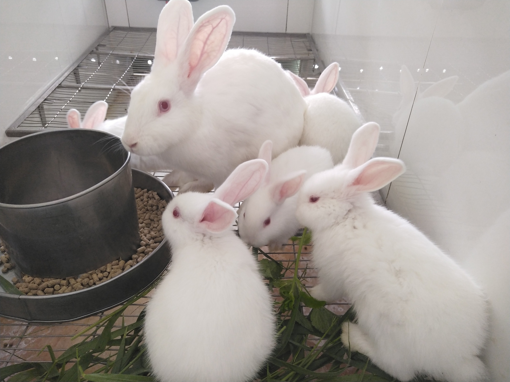

Thỏ là động vật có vú nhỏ được xếp vào họ thuộc bộ , sinh sống ở nhiều nơi trên thế giới. Thỏ được phân
loại thành bảy loại, điển hình như thỏ rừng châu Âu (Oryctolagus cuniculus), thỏ đuôi bông (giống
Sylvilagus; 13 species), thỏ Amami (Pentalagus furnessi, 1 loài thỏ quý hiếm ở ). Còn nhiều loài thỏ
khác trên thế giới; thỏ đuôi bông, thỏ cộc và thỏ rừng được xếp vào bộ Lagomorpha. Tuổi thọ của thỏ từ 4
tới 10 năm, thời kỳ mang thai khoảng 31 ngày.
Thỏ thường được biết đến một cách trìu mến với tên vật nuôi ở nhà hoặc , đặc biệt khi ám chỉ thỏ con đã
thuần hóa. Trước đây, từ để chỉ thỏ trưởng thành là "coney" hoặc "cony", trong khi "rabbit" để chỉ thỏ
con. Từ "coney" bị bỏ đi khi một thuật ngữ dùng cho động vật sau khi chúng được kết nạp vào thế kỷ XVIII
vì đồng nghĩa với từ "cunt", theo nghĩa rộng thì thiếu tế nhị. Mới đây, thuật ngữ "kit" hoặc "kitten"
được dùng để chỉ thỏ con. Thỏ con được gọi là "leveret" và thuật ngữ này đôi khi không được áp dụng
chính thức cho thỏ con. Thỏ đực gọi là "buck" và thỏ cái được gọi là "doe".
